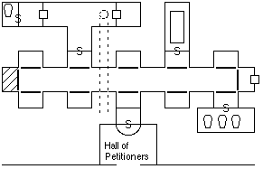
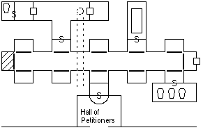
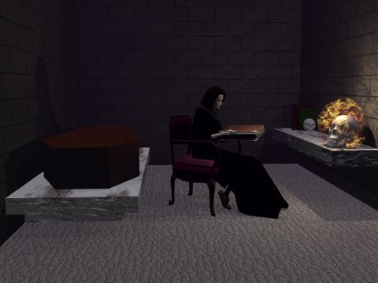

Chapter 6: Good 1, Evil 0
"I think these are the quarters of... what's her name, Falafel?" -- Haer
 he abomination breathed its last, shuddering breath and was still, its life
of pain finally over. The walls of the chamber were lined with surgical
instruments and anatomical diagrams. Haer helped himself to several of
the implements.

he abomination breathed its last, shuddering breath and was still, its life
of pain finally over. The walls of the chamber were lined with surgical
instruments and anatomical diagrams. Haer helped himself to several of
the implements.

Returning to the hallway, the party decided to check out the one
crypt upon which Haer had detected no traps or magical triggers of any kind.
Its stone cover depicted a human female in full plate armor. Mystical used a
Telekineses spell to open the door from a distance. Beyond was a 10
foot square room which held a mummy. Not the animated kind, just a dead body
wrapped in smelly bandages which was tossed brusquely out into the hallway
while Haer checked the interior. He found a small button which, if pushed,
would set off some kind of mechanism (presumably the trap door in the
floor). However, if one grabbed hold just right it could also be pulled,
which would simultaneously open a well-hidden secret door in the wall and
set off a different trap. Removing an extensive toolkit from the bag of
holding Haer carefully disarmed this second trap. Zem then pulled the
button to open the door.
Kahlen's journal
Curiouser and curiouser. Not only are the minions of evil
pleasant and polite, but they have excellent taste in decorating. The room
was carpeted in a plush emerald green floor covering, and furnished with
comfy leather couches. A silver tea service for eight sat on a mahogany end
table at the far side of the room. It smelled faintly of fresh flowers and
was, on the whole, quite tasteful. It reminds me of the tales I've heard of the
devious cult of Stoowort, who entertain their guests with fine drink and
conversation in impeccable surroundings, all the while poisoning them until
they are stupefied and ready to be sacrificed to the foul demon Maartha.
Haer cast a Stonesight spell and
determined that the rooms beyond the doors to either side were empty.
Rosvenir, Mystical and I went through the right hand door and into a large
library. The walls extended up thirty feet or more, lined with shelves holding
books, scrolls, specimen jars and mechanisms. Mystical and Rosvenir flew up
the upper shelves to examine the assorted lore while I checked the jars at
ground level. Rosvenir seemed quite excited over an astronomical book he
located, an Atlas of the Planes or some such. There was a finely crafted desk
in the center of the room, but it was empty.
Meanwhile, Haer determined that the
tunnel he had seen under the
floor of the crypt led to a trap door beneath the scrumptious
carpeting in the main room. Zem helped the halfling move the beautiful
leather divan to one side and roll back the floor cover. Lifting the trap
door revealed a drab little tunnel. Haer jumped down into the tunnel, and
came back a few minutes later to report that he believed that it came up in
the large lecture hall of the Black Academy.
The Narrator
Rosvenir examined the tea service, determining it to have
enchanted effects to keep its contents fresh and at their proper
temperature. Thinking to take the teapot, Haer began pouring the contents
into one of the cups. It was blood, kept at exactly 98.6 degrees by the
magic of the teapot. The teapot was left on the table.
The room to the left was an elegant bedroom. A large four poster
bed dominated the scene, with a small mahogany end table next to it. Along one
wall was a closet with a wooden door, while a dressing table and antique
silver mirror sat along another wall next to an inlaid chest of drawers.
A small shelf of books was attached above the headboard.

Rosvenir's Presence spell detected two minds beyond the far
wall of the bedroom. Haer eventually located the outlines of an extremely
well concealed door behind the bed. It took him many more minutes to locate
the hidden catch which would open it. Casting another Stonesight
spell, he peered through the wall and into the concealed room beyond. It was
a spartan stone room, in sharp contrast to the luxury of the outer rooms. A
deep shelf on the far wall held a coffin of polished cherry wood. Seated in
a chair in the middle of the room was a beautiful, pale woman. This had to
be Ferranifer, headmistress of the Academy. Ferranifer sat reading a book,
one of three on a simple stone desk in front of her.
All of the light in the room was provided by a flaming skull on
the stone desk. Kurik knew of a form of Undead which resembled a flaming
skull, and said they were sometimes kept as pets by particularly evil
individuals. Given the coffin in the secret room and the teapot full of
blood, it was believed that Ferranifer was a vampiress. As such, she was
likely to be highly resistent to magic, though elemental water and
electrical attacks would be somewhat effective. A simple plan was
developed: Rosvenir would open the secret door and cast a Flash spell
in the room to blind and confuse the two Undead inside, then Zem and Kurik
would rush in while Mystical would employ magical attacks from the doorway.
Zem and Kurik cast various defensive magics in preparation.
Rosvenir opened the door and cast his spell, with Zem rushing by
even as the bright light faded. The flaming skull arose from the table and
shouted, "Now you have found me and I am Death!" Zem swung at
Ferranifer as he ran, nearly chopping off her left arm as she tried to rise
from the chair. Zem had cast Lightning Blade, which discharged into
the vampiress and ruined her eyes as the bolt arced back and forth.
The smell of roasted meat filled the room. Kurik charged in to face the
flaming skull, which promptly hit him with two Fire Bolts but caused
little damage. The skull then hit Zem in the head with another bolt,
stunning him.
Seeing this, Mystical brought up a Wall of Water
separating the two Undead from the party members. The churning liquid served
as a hinderance long enough for Zem to shake off the effects of the
blow, and for Kurik to cast Repel Undead on the flaming skull. Then
Ferranifer was able to disintegrate half of the wall and the battle was
rejoined. She twice attempted to Charm Zem, but with the bonus from
Kurik's Protection Prayer Zem resisted both attempts. Meanwhile the
electricity continued to arc about her body, causing her skin to melt and
bubble in places. In her weakened state she could no longer resist Kurik's
Holy Aura and it sent her crashing back into the far wall where she
slumped face forward. Her body dissolved into mist, which then briefly
coalesced to solid before moldering into dust.
Kurik's earlier Repel Undead had no visible effect on the
flaming skull, but it had stopped moving and taken no offensive action
since. Kurik and Zem took turns whacking on it until its flame went out.
Holy water was then poured onto the dust that had once been Ferranifer. A
pendant, broach, and ring were found mixed in with the ashes.
Zem's sword demanded blood, not being able to feed on the Undead.
Endira retrieved the teapot from the outer chambers which, strangely enough,
satisfied the sword. When it finished the teapot was drained completely of blood.
![[After the Battle]](amulet.jpg) Weapons at the ready, the coffin was opened and found to be empty.
Completely empty, not even any earth from the grave. Fortunately Haer
located three secret compartments in the bottom which each contained dirt
and some treasure. The booty was laid out on the floor for identification,
while the soil was mixed thoroughly with holy water. The loot consisted of:
Weapons at the ready, the coffin was opened and found to be empty.
Completely empty, not even any earth from the grave. Fortunately Haer
located three secret compartments in the bottom which each contained dirt
and some treasure. The booty was laid out on the floor for identification,
while the soil was mixed thoroughly with holy water. The loot consisted of:
- 371 gold pieces and 7 gems
- three scrolls with Arcane spells from the Wizard base lists:
Unpower Faith, Conceal Effect and Merging
(claimed by Rosvenir)
- gauntlets to enhance strength (+3 St bonus, claimed by Kurik)
- a Rope of Climbing (claimed by Haer)
- Ferranifer's ring can cast Levitation at will (claimed
by Endira)
- the now drained tea service, which keeps its contents fresh
and at their proper temperature (claimed by Endira)
- the broach Ferranifer was wearing is made of obsidian and
etched with the image of a single fang. It has several
magical abilities including resistance to Arcane magic and
an Absolution ability (no one claimed it)
- the pendant Ferranifer was wearing is the Amulet of the Void,
mentioned in
Dessatysso's journal.
It is magical but has no enchanted abilities itself, instead
serving as a catalyst for some sort of Contain Entity
spell.
- the first of the three books in the chamber was the Manual of
Greater Bone Golem Construction, which made particular
reference to the golem guarding the gate to the City and how
it was constructed. The Organic Skills and Necromancer
spell lists are required, along with a large supply of bones.
- the second book was The Blood Codex, which contained detailed
instructions (in Common) of how a willing human magic user could
transform themselves into a powerful undead. Also, inscribed onto
the last page was a unique Essence spell titled Black Fire
Bolt
- the third book was written in a strange language, and appeared to
be a spellbook. No one could identify the spells.
- Haer also collected a quantity of vampire dust from the remains of
Ferranifer, which might prove useful to an alchemist.
Prev: The Black Academy |
Entrance |
Next: Deja Vu
Experience awarded for this session:
- Haer 6,500
- Mystical 6,500
- Endira 6,500
- Rosvenir 6,500
- Kurik 7,000
- Zem 7,000 + 1 Fate point